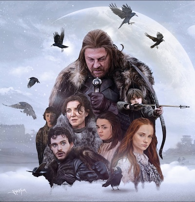
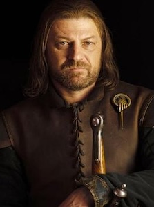
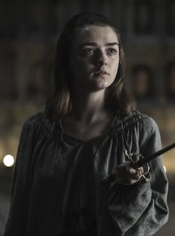
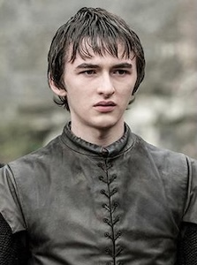

The House Stark from Winterfell. The house that governs Westeros at the Kingdom of the North. Led by the patriarch of the family, Ned Stark.
Their house symbol is a Direwolf
Their words are "Winter is Coming"
For some time, the family ruled as Kings of the North
Image from Deviantart Creative Commons
Some Members of Stark Family

Hand of the King
Eddard "Ned" Stark
Ned Stark, the father of the Stark Family. A valiant leader that puts his honor and the honor of his family first before anything else. He was called as the hand of his good friend, King Robert Baratheon. He had a tragic death at the hands of the Lannister Family.

Assassin
Arya Stark
Arya Stark, one of Ned Stark and Catelyn Stark's daughters. She witnessed the execution of her father, Ned, at the hands of the Lannister Family. She trained her whole life to become an assassin with the help of No One. She later became an essential part of the battle with the Night King.

Three Eyed Raven
Bran Stark
Bran Stark, one of Ned Stark and Catelyn Stark's sons. He was paralyzed from the waist down at a young age due to a fall from a tower. He has warging abilities, that is, he can possess people, animals, and other creatures. He later became the Three Eyed Raven.